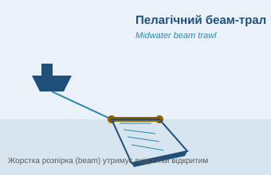
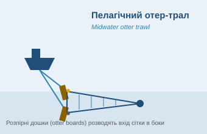
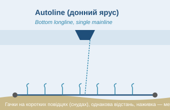
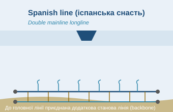
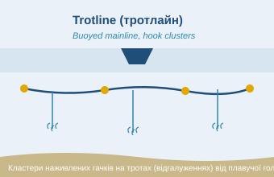
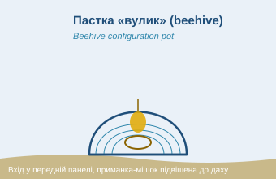
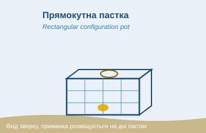
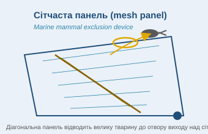
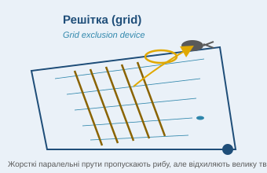

Знаряддя лова
Технічна примітка щодо зображень
📄 Файл:
Illustrated generic gear diagrams_2023 v1.3.docx
↗ Відкрити
⬇ Завантажити
Коментар: Оригінальні схеми знарядь у цьому файлі побудовані як векторні «полотна» Word (сітчасті текстури, накладені на векторні контури). Було випробувано два незалежні способи вилучення: (1) пряме вилучення вбудованих зображень і повна конвертація сторінок у зображення через LibreOffice — відтворюють лише текстуру-сітку без контурів; (2) повторна спроба через експорт у SVG та PNG (фільтр «draw_png_Export») — обидва завершилися помилкою рендерера LibreOffice (SfxBaseModel::impl_store … 0xc10) саме на цих фігурах. Це підтверджена межа можливостей доступних інструментів, а не втрата даних: векторні дані (~1 МБ) фізично присутні у файлі document.xml, просто жоден наявний рендерер не може їх коректно відобразити. Замість оригінальних сканів нижче додано власні спрощені схематичні ілюстрації (не копії офіційних креслень) для кожного типу знаряддя — вони передають принцип роботи, але не є технічним кресленням. Якщо потрібні саме оригінальні схеми — рекомендую відкрити файл безпосередньо в Microsoft Word.
5.1 Типи знарядь лова
Натисніть на картку, щоб відкрити збільшену схему та повний опис.

Пелагічний беам-трал
Midwater beam trawl
Жорстка розпірка (beam) утримує вхід сітки відкритим; загальна довжина сітки вказується окремо.

Пелагічний отер-трал
Midwater otter trawl
Розпірні дошки (otter boards) розводять вхід сітки в боки за рахунок гідродинамічного опору під час буксирування.

Autoline (донний ярус)
Bottom longline, single mainline
Одинарна обважена головна лінія; гачки на коротких повідцях (снудах), наживлюються механічно під час постановки.

Spanish line (іспанська снасть)
Double mainline longline
До головної лінії приєднана додаткова станова лінія (backbone), з'єднана поперечними відгалуженнями.

Trotline (тротлайн)
Buoyed mainline, hook clusters
Головна лінія плавуча (утримується поверхневими буями); кластери наживлених гачків прикріплені через троти (дропер-лінії).

Пастка «вулик»
Beehive configuration
Вхід у передній панелі (замість верхньої); приманка-мішок підвішена до даху пастки, а не лежить на дні.

Прямокутна пастка
Rectangular configuration
Прямокутний каркас, вхід зверху, приманка розміщується на дні пастки.

Сітчаста панель
Mesh panel exclusion device
Діагональна сітчаста вставка спрямовує велику тварину (тюленя, китоподібного) до отвору виходу над основною сіткою.

Решітка
Grid exclusion device
Жорсткі паралельні прути пропускають рибу до кутка сітки (codend), але відхиляють велику тварину до отвору виходу.
Трали
- Trawl: midwater beam — пелагічний беам-трал (загальна довжина сітки вказується окремо; ілюструється одна з двох сіток).
- Trawl: midwater otter — пелагічний отер-трал.
Ярусна снасть (Longline)
- Autoline — донний ярус з одинарною обваженою головною лінією, гачки на коротких повідцях (снудах), наживлюються механічно під час постановки.
- Spanish line (іспанська снасть / подвійна лінія) — донний ярус, де до головної лінії приєднана додаткова станова лінія.
- Trotline (тротлайн) — донний ярус, де кластери наживлених гачків прикріплені до плавучої головної лінії через троти (відгалуження, дропер-лінії).
Окремо документ описує альтернативне маркування ліній для роботи в льодових умовах та розташування радіомаяка/пристрою відстеження позиції (опціонально) і поверхневих поплавців/буїв.
Пастки (Pot)
- Beehive configuration («вулик») — можлива альтернативна конфігурація з входом у передній панелі (замість верхньої) та підвішеною до даху приманкою-мішком (замість розміщеної на дні пастки).
- Rectangular configuration — прямокутна конфігурація пастки.
Пристрої виключення морських ссавців (Exclusion Device)
- Mesh panel — сітчаста панель.
- Grid — решітка.
- Для кожного типу знаряддя при нотифікації зазвичай обирається один тип пристрою виключення (тюленевий, китовий або інший); Члени CCAMLR повинні вказувати деталі кожного використаного пристрою виключення морських ссавців.
Примітка документа: синій текст на офіційних схемах позначає поле, для якого існує відповідна специфікація знаряддя на сайті суден CCAMLR.
Коментар: Звіряння фактичного знаряддя судна з цими типовими схемами та з полями нотифікації на сайті CCAMLR прямо вимагається в розділі «Fishing Operations» звіту про рейс (див. розділ 3.2).